This chapter specifies the pages of repoctl ui for daily build work. They are Overview, Advisories, Upstream, Graph, Plan, the Rebuild dialog, Runs, the run page, the node log and the agent panel. The frame of all pages (shell, URL scheme, live updates, calm rules) is in Web UI.
r-20261102-1750-a3f at 18:01 (11m02s), 8 builds, slurm@el10 failed, slurm-singularity-exec@el10 blocked.All pages use the app shell (ui.html#shell) and the calm rules R1 to R13 (ui.html#calm). Each page section ends with its URL, its CLI equivalent and its SSE events (mechanism: ui.html#live).
The Overview is the landing page of a set. It tells the human what needs action now, and in which order. The page head shows the set name, directory, branch and targets on one line. Plan, Build… and Publish… are outline buttons.
Needs you is one numbered list in work order. An item has a kind label, a coloured left edge (red failure, amber attention, grey info), one sentence, one visible button and a ⋯ menu. A code follows the sentence (R8). The kinds, in order:
served.stale, publish.html#freshness)latest| # | Kind | Text in the story | Visible button | ⋯ menu |
|---|---|---|---|---|
| 1 | Run | slurm@el10 failed in run 17:50. The build needs rocm-smi-devel. The package rocm-smi gives it, but only for el9. Under it: error: Failed build dependencies: rocm-smi-devel is needed. | Show log (filled primary), ✦ Explain failure (quiet) | – |
| 2 | Advisory | pmix@el9 does not install on a new el9 host. required pmix-6.1.0-1.el9 needs libhwloc.so.15; EPEL 9 now has hwloc-libs 2.11.2, which gives only libhwloc.so.16. A publish of el9 that changes pmix stops until you fix it or accept it. | Rebuild… (primary of its row only) | Show closure, Copy command, ✦ Is a rebuild necessary? |
| 3 | Lock | repoctl.lock has changes that are not committed. ucx moves from 907c60d to 4b1e9c2 ("Bump to 1.22.1"); slurm, openmpi and slurm-singularity-exec have rebuild commits. Publish refuses a lock that is not committed. | Show diff | Copy commit command |
| 4 | Repo | el9 and el10: latest is 51 days old. | Review… | – |
R4 on this page: the Advisories card only counts item 2 ("1 required: item 2"), and the matrix does not tag it. The current run shows in the run chip, not in a card.
check.failed, check.stale, advisories.html#health).repoctl repo prune removes. The fold "Snapshot refs and signer" holds one ref per target with copy and the signer (d.klein …41D8 0B6E). Different snapshots per target give one line per target. A copy that is behind shows the pill "behind".The matrix shows only the packages that are not current on all their targets. The card head keeps a count per target: "el9 7 of 11 current · el10 6 of 10 current". The fold row "7 packages current on all their targets" holds munge, rocm-smi, pmix, pmix_v5, pmix_v4, prrte and slurm-release.
| Column | Content |
|---|---|
| Package, Version | There is no Commit column. The commit is in the tooltip of the version and on the package page. |
| One per target | The state word, the step or a note, and the NVR in muted mono. Pills only for running, failed and blocked; current is quiet text. rocm-smi@el10 shows "not a target". |
| Upstream | Empty for a current package, else accent text, not a pill: "↑ 26.05.5", "↑ 5.0.12" or "frozen". |
Story rows: ucx (staged on both targets), slurm (el9 rpm, el10 failed), openmpi (el9 rpm, el10 srpm), slurm-singularity-exec (el9 waiting, el10 blocked). A click on a cell opens the node in its run or in the node drawer.
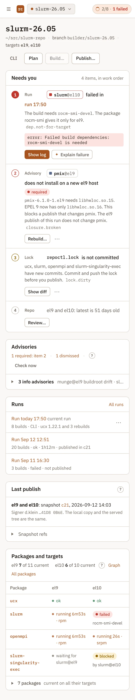
With no item, Needs you is one line: "Nothing needs you." The empty, error, offline and no-agent states are in ui.html#states.
/s/<set>/repoctl status, repoctl advisories, repoctl runsset-head, attention (Needs you), advisories, advisory:ID, current-run, recent-runs, last-publish, node:DIR@TARGET (one matrix cell)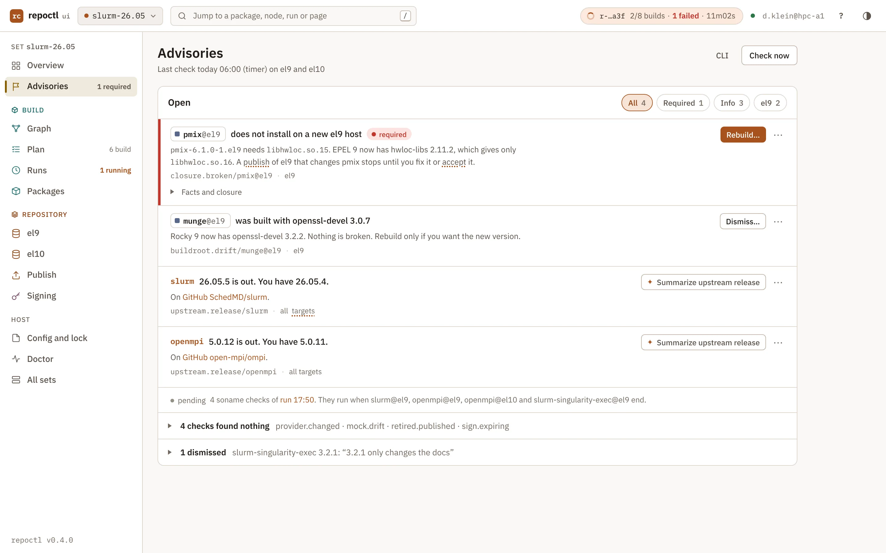
The page lists all advisories of the set with their facts and the ways out (codes and gate: advisories.html).
?dismissed=1 lists the dismissals with note, user and time (upstream.release/slurm-singularity-exec, "3.2.1 only changes the docs", d.klein). When the facts change, the advisory comes back as "dismissed, facts changed".The Dismiss dialog has a note field (8 or more characters). The CLI toggle holds repoctl advisories dismiss ID --note "…". After the write, the dialog says "Commit and push .repoctl/advisories.yaml", with a copy button (advisories.html#dismissals). The element id of a row is in ui.html#sitemap.
/s/<set>/advisories[?dismissed=1&level=&target=]; POST …/-/actions/advisory-dismiss, advisory-undismiss, checkrepoctl advisories, repoctl checkadvisories (the list), advisory:ID (one row)The page shows the output of repoctl upstream as a table. For each package, it compares the version at the lock commit with the newest upstream release (status values: cli.html#cmd-upstream).
?refresh=1, which runs repoctl upstream --refresh. CLI toggle.upstream.release/DIR on the Advisories page. A dismissed update shows the note of its dismissal. The fold of a row lists the newer releases with date and URL (--releases). ✦ Summarize upstream release is in ⋯ when an agent is set up.The Upstream tab of the package page shows the same row for one package (ui-publish.html#package).
/s/<set>/upstream[?refresh=1]repoctl upstream, --releases, --refreshupstream (the table), advisory:ID (the dismissal note)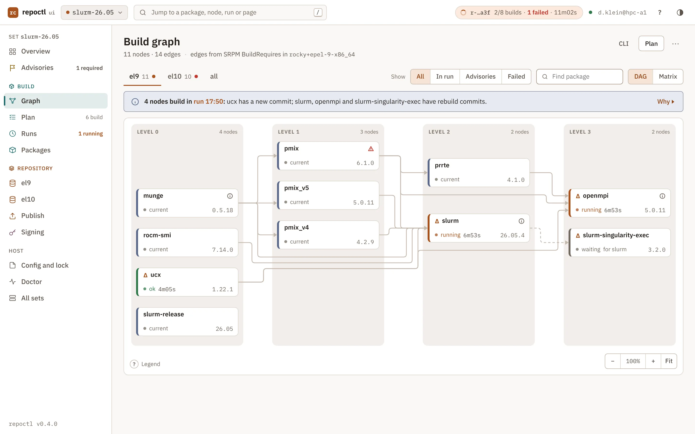
The Graph shows the build graph of one target with the live state of the current run. It answers "why does this node build, and what waits for it" (edges: build.html#graph).
graph.js (about 90 lines) only adds hover, zoom, timers and the edge state mirror.| Part | Content | Rule |
|---|---|---|
| Left bar | State colour | A failed card also gets the failed background, a blocked card the blocked background. |
| Row 1 | Δ · dir · advisory marker | Δ when the plan action is build. The marker is a small icon in the level colour with a tooltip ("slurm 26.05.5 is out"). A click opens the drawer at its advisories. |
| Row 2 | State · elapsed · version | Running: the elapsed time of the node ("6m53s"); the tooltip and the drawer name the step. Ok: total time. Failed: step and time ("rpm 1m48s"). Blocked: "slurm failed". Waiting: "for slurm". Current: quiet text. |
A card is 212 × 60 px (union view 212 × 84). It is HTML in a foreignObject that is 4 px larger on each side, so the focus ring is not cut.
| Style | Meaning | Attribute |
|---|---|---|
| Solid grey | Dependency done (ok, current, staged) | data-src-state |
| Dashed grey | Dependency pending: the dependent waits for it in this run | data-src-state |
| Dashed red | Dependency failed or blocked | data-src-state |
| Copper / dark, 2.5 px | Downstream / upstream of the selected node | is-down, is-up |
| Dotted | Union view: the edge exists on some targets only | data-only="el9" |
An arrow points from the dependency to the dependent, left to right in build order. Ports and hubs: layout, step 6.
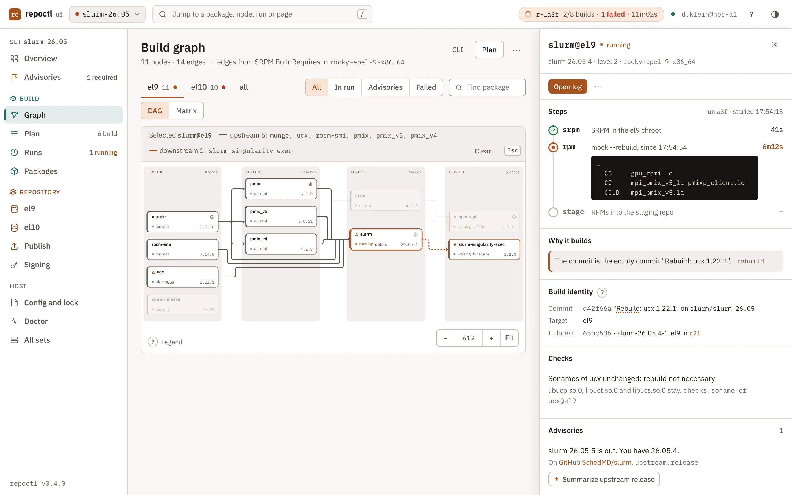
&node=slurm to the URL. Esc or Clear removes it.g.gnode has data-up and data-down. The client only toggles classes and draws highlighted edges last.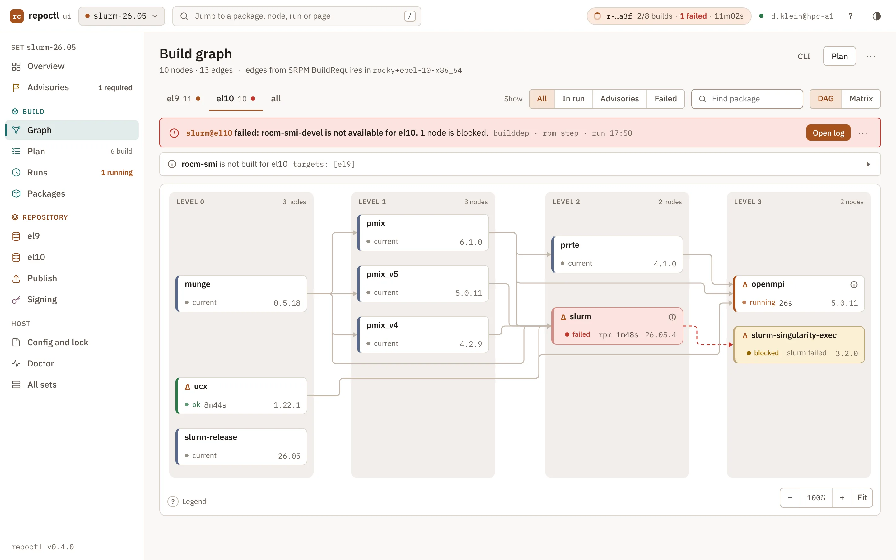
The error banner is one sentence: "slurm@el10 failed: rocm-smi-devel is not available for el10. 1 node is blocked." Open log is the filled primary; Package slurm is in ⋯. An info line names each package that excludes the target ("rocm-smi is not built for el10 (targets: [el9])"). Its fold gives the two fixes.
el10 has 10 nodes and 13 edges. It keeps the node order of el9, so a package stays in place when the tab changes.
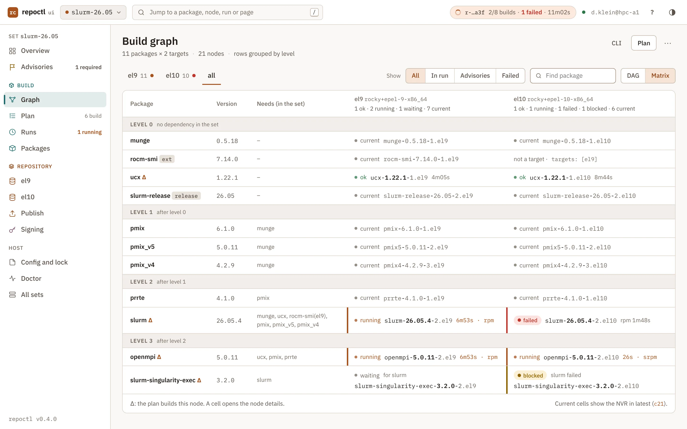
latest as quiet text. rocm-smi@el10 shows "not a target · targets: [el9]". Failed, running and blocked cells have a 3 px left bar. A click opens the same drawer as the DAG.The matrix suits many targets; the DAG answers "why does this build".
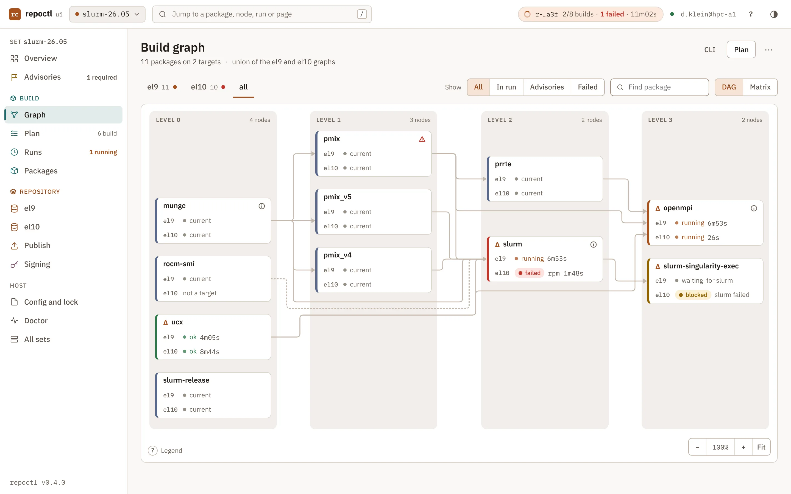
target=all draws the union of the target graphs. Each card has one state line per target. The union order is also the start order of each target layout.
The drawer is a fixed panel on the right, 460 px wide. The graph scrolls, so the selected node stays visible. Parts, for slurm@el9 at 18:01:
| Part | Content |
|---|---|
| Head | Node id, version, level, mock config, state, close (a link to the URL without node=). |
| Actions | Open log (filled primary). Package page, In run and Plan this node in ⋯. |
| Steps | srpm ok 0:41 → rpm running 6:12 with the last 3 log lines → stage. |
| Why it builds | The plan reason and one sentence: "rebuild: the commit is the empty commit 'Rebuild: ucx 1.22.1'". A current node names its snapshot, a staged node its run. Reasons: build.html#plan. |
| Build identity | Package commit with branch slurm/slurm-26.05 and the target, next to the commit in latest (model.html#identity). |
| Checks | The soname check of the dependencies that this run built: "Sonames of ucx unchanged: rebuild not necessary" (checks.soname of ucx@el9). |
| Advisories | upstream.release/slurm (26.05.5). |
| Dependencies | Needs (6) and Needed by (1) with states, and the BuildRequires that matched a set package. |
| Output | NVR after the build (slurm-26.05.4-2.el9), the staging path after success, and Rebuild… (Rebuild dialog). |
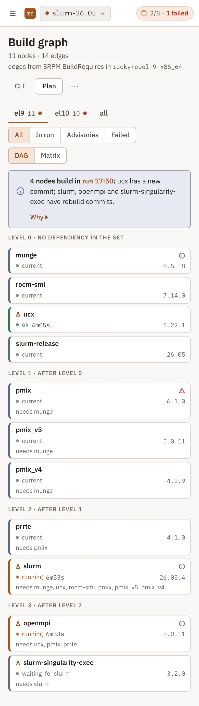
The page also holds a level list: one heading per level, the same cards and a "needs …" line. Below 760 px it replaces the SVG. On a desktop it is visually hidden and serves screen readers.
/s/<set>/graph?target=el9&view=dag|matrix[&node=slurm][&filter=run|advisories|failed][&q=pmix]; target=all; drawer fragment /s/<set>/graph/node/DIR@TARGET; graph.dot, graph.jsonrepoctl graph --target el9 --format dot|jsonnode:DIR@TARGET (card, matrix cell, open drawer), graph:TARGET (structure changed: "The graph changed. Reload.")A node event carries the whole card. htmx swaps it inside the foreignObject, so position and edges stay. graph.js copies the state to the edges.
Package internal/web/graphlayout lays out the graph. It is a pure, deterministic function with no I/O. The server caches the result by a hash of nodes, edges and target, so a state change never causes a new layout.
Input: the node ids in repoctl.yaml order, the edges (dependency → dependent) and the card size. Output: boxes, edge paths, lane rectangles and the SVG size.
<path> through its virtual nodes, so hover marks it as one element.Cost: 11 nodes take well under 1 ms. Above 100 nodes the transpose step runs at most 4 rounds.
| Group | Children and attributes |
|---|---|
g.lanes | The lane rectangles. |
g.edges | Each g.edge has data-from, data-to, data-src-state and a <title>. |
g.nodes | Each g.gnode has data-node, data-up, data-down and the card in a foreignObject. |
Cards are focusable (role=button). The tab order follows the layer, then y. The SVG has role=img and an aria-label with the counts.
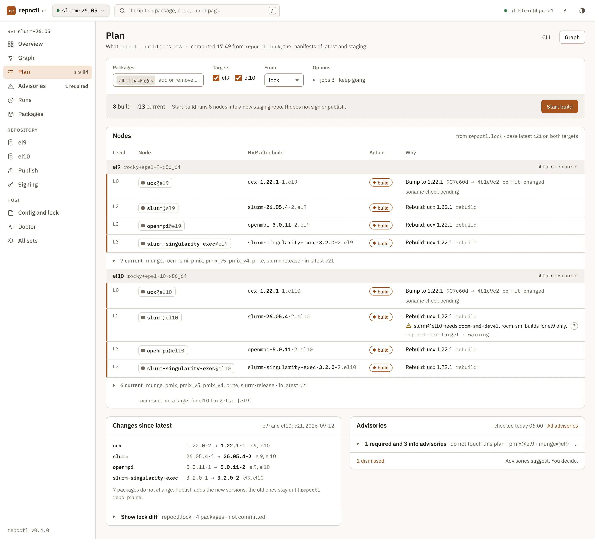
The Plan page shows what repoctl build does now, and why, before the human starts it (actions and reasons: build.html#plan).
repoctl build and keeps its state in the URL.| Case | Result |
|---|---|
The server computes another hash than the hidden plan=sha256:… of the form. | No run starts. The page shows "The plan changed. Check it and start again." |
| A selected node needs a skipped dependency that is neither current nor staged. | An error row. Start build is off. |
| A run of this user holds the set lock. | Start build is off: "Run r-…a3f is active." (build.html#lock) |
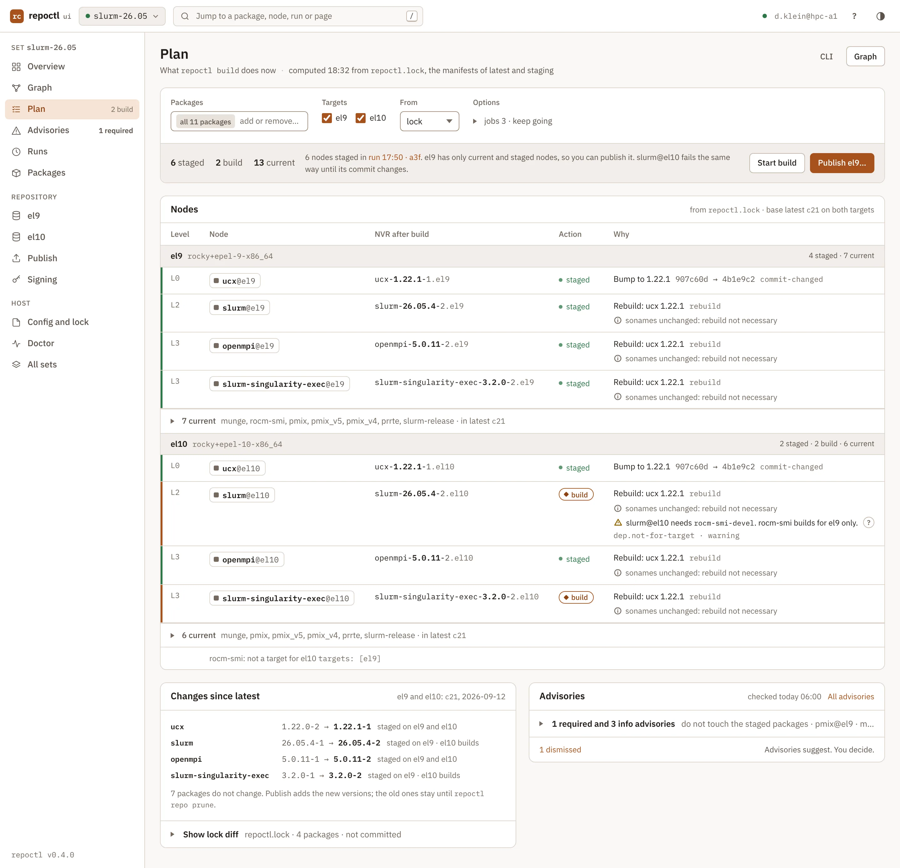
/s/<set>/plan?dir=ucx&target=el9&from=lock&force=1&fail_fast=1&jobs=3 (no target: all)repoctl plan; Start build = repoctl buildplan:TARGET (the plan is stale), advisory:ID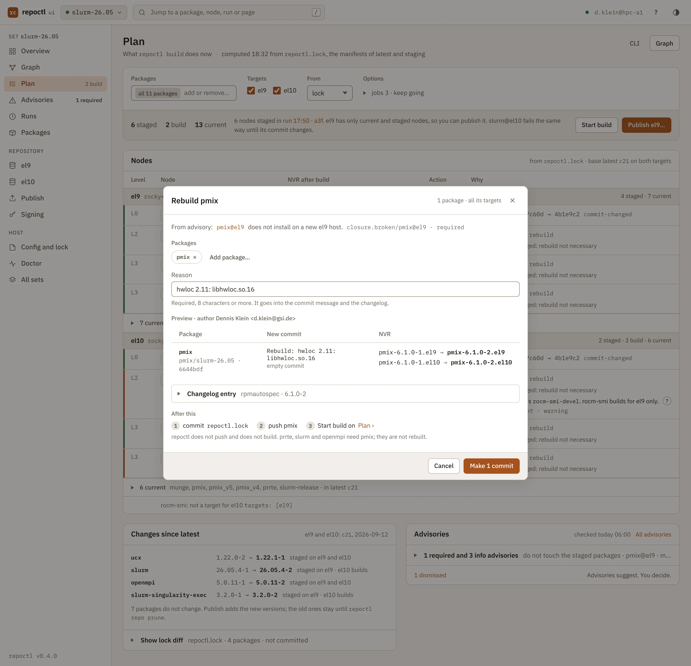
The dialog makes the commits of repoctl rebuild (build.html#rebuild).
repoctl rebuild pmix --reason "…". After the commit, a toast confirms it and the plan loads again.During a run, Make 1 commit is off with "Run r-…a3f is active." (ui.html#states).
GET /s/<set>/-/dialog/rebuild?dir=pmix&advisory=closure.broken/pmix@el9; POST /s/<set>/-/actions/rebuildrepoctl rebuild DIR... --reason TEXT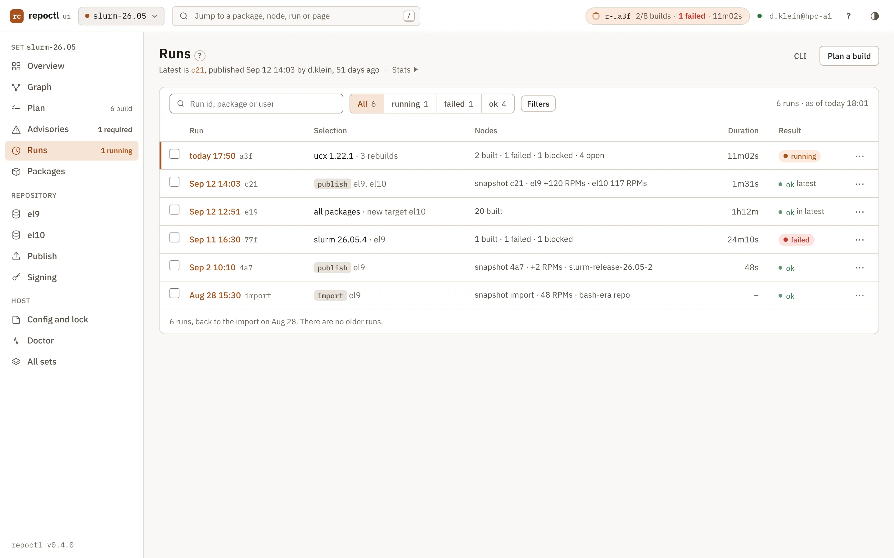
The Runs page lists every build and publish run of the set, newest first.
p-…) shows its targets and its snapshot.| Story row | Kind | Content | Result |
|---|---|---|---|
| today 17:50 · a3f | build | "ucx 1.22.1 · 3 rebuilds", 2 built · 1 failed · 1 blocked · 4 open | running |
| Sep 12 14:03 · c21 | publish | el9 and el10 | latest |
| Sep 12 12:51 · e19 | build | 20 built, 1h12m | ok, in latest |
| Sep 11 16:30 · 77f | build | 3 builds | failed |
The older publish runs of el9 (4a7, the import) follow.
/s/<set>/runs[?state=&kind=build|publish|check|gc&target=&since=&cursor=]; /s/<set>/runs/compare?a=RUN&b=RUN|prev|publishedrepoctl runs [--state STATE] [--kind build|publish]recent-runs (a new row), run:RUN (one row, at most once per second)
The run page shows one run, live and after its end.
%if 0%{?rhel} < 10), or add el10 to the targets of rocm-smi. Then commit, run repoctl pin slurm and build again.root.log:813 · No matching package to install: 'rocm-smi-devel', rule id, mock exit code, 6 lines around the match.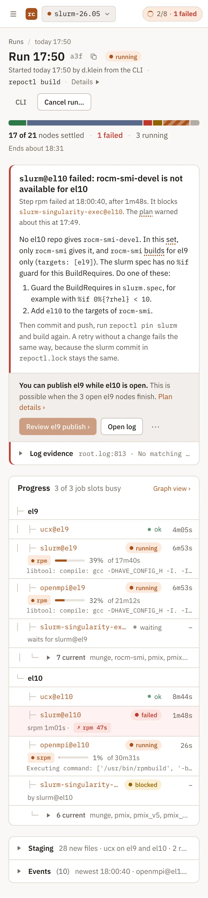
| Action | Request | Behaviour |
|---|---|---|
| Cancel run… | GET …/-/dialog/cancel?run=RUN, then POST /s/<set>/-/actions/cancel | A confirm dialog that names the origin of the run, then repoctl cancel RUN (build.html#cancel). While the run is interrupting, the button is Stop now…, which runs repoctl cancel RUN --force. |
| Retry failed | POST /s/<set>/-/actions/build | A new run with the dirs of the failed and blocked nodes, on the old targets (repoctl build slurm slurm-singularity-exec). The plan reads repoctl.lock again. Off while the old run is active. |
| Open in terminal | client side | In the CLI toggle. Copies repoctl -C ~/src/slurm-repo runs RUN --follow. |
| Copy for agent | client side | Copies repoctl logs RUN NODE --json, which includes the problems list. |
When the commit did not change since the failure, the Retry failed entry says that a retry cannot help.
repoctl scans each log while mock writes it. A rule gives a summary, the evidence lines and an optional diagnosis. A fingerprint (rule, normalized capture, DIR@TARGET) finds the same error in earlier runs. The rules live in the core, so CLI, MCP and the triage-build skill get the same results.
| Rule | Match (examples) | Log |
|---|---|---|
| missing-buildrequires | dnf4 No matching package to install: '(.+)'; dnf5 No match for argument: (.+); error: Failed build dependencies: | root.log, build.log |
| build-section-failed | error: Bad exit status from /var/tmp/rpm-tmp.\w+ \(%(prep|build|install|check)\) | build.log |
| unpackaged-files | error: Installed \(but unpackaged\) file\(s\) found: | build.log |
| compile-error, make-error | ^\S+:\d+:\d+: (fatal )?error: ; make(\[\d+\])?: \*\*\* .* Error \d+ | build.log |
| mock-error | ^ERROR: Exception\(, ERROR: Command failed | repoctl.log |
repoctl doctor./s/<set>/runs/RUN, for example /s/slurm-26.05/runs/r-20261102-1750-a3f; publish runs use the same formrepoctl runs RUN --follow, repoctl logs, repoctl cancel; frame build failurerun:RUN (header, progress, failure cards, staging, events), node:DIR@TARGET (one tree row). A finished run opens no stream.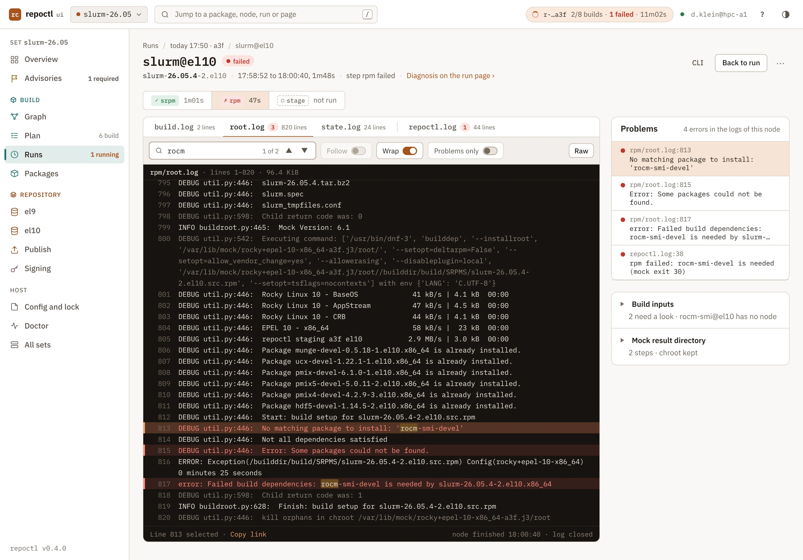
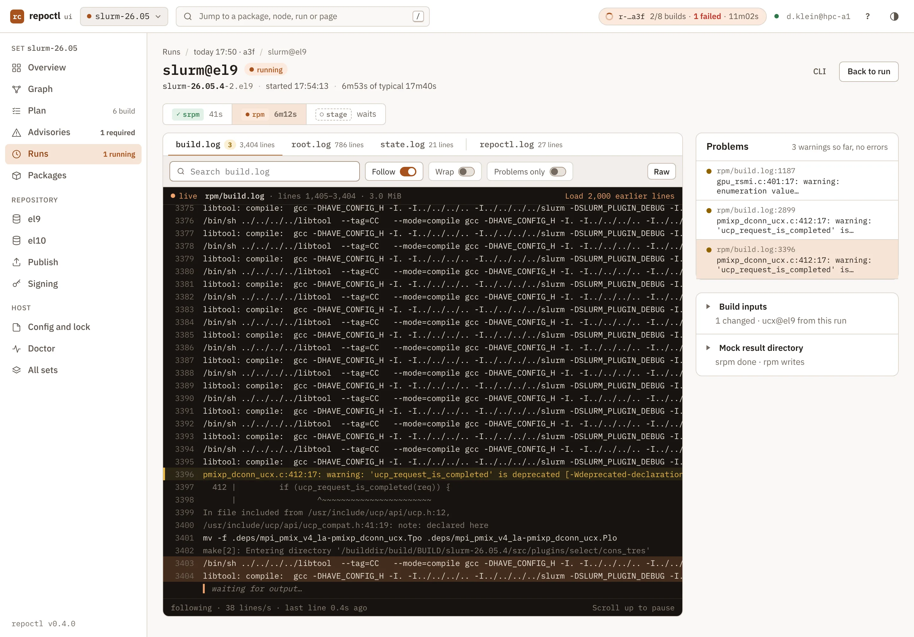
The node log shows the logs of one node in one run. It holds the evidence; the run page gives the summary.
#L813). A red bar marks an error line, amber a warning, copper the selected line. <mark> marks a match. The surface is dark in both themes.Keys: / search, n / N match, e next error, f follow, w wrap, g / G start or end.
| File | Writer | Content |
|---|---|---|
| root.log | mock | Chroot setup, dnf, install of the SRPM, dnf builddep. Missing build dependencies show here. |
| build.log | mock | rpmbuild output (%prep to %check), compiler errors. The largest file (slurm: about 6,000 lines, 2.4 MiB). |
| state.log | mock | Phases with Start and Finish lines. A Start without Finish marks the failed phase. |
| repoctl.log | repoctl | One per node: reason, mock argv and stderr, exit codes, step times, extracted errors, blocked nodes. |
Each step is one mock call with its own logs (paths: build.html#logs). hw_info.log stays in the result directory, with no tab.
around=). A line index (FILE.idx, one offset per 1,000 lines) makes this fast./s/<set>/runs/RUN/nodes/DIR@TARGET[?step=rpm&file=root.log&q=&follow=1&wrap=1&around=N][#L813]; raw …/nodes/DIR@TARGET/logs/STEP/FILE[?download=1] (for example …/logs/rpm/root.log), …/logs.tar.gzrepoctl logs RUN NODE [--step] [--file] [--follow]; frame logslog:DIR@TARGET (appended lines; reconnect: ui.html#log-stream), node:DIR@TARGET (step bar, last line)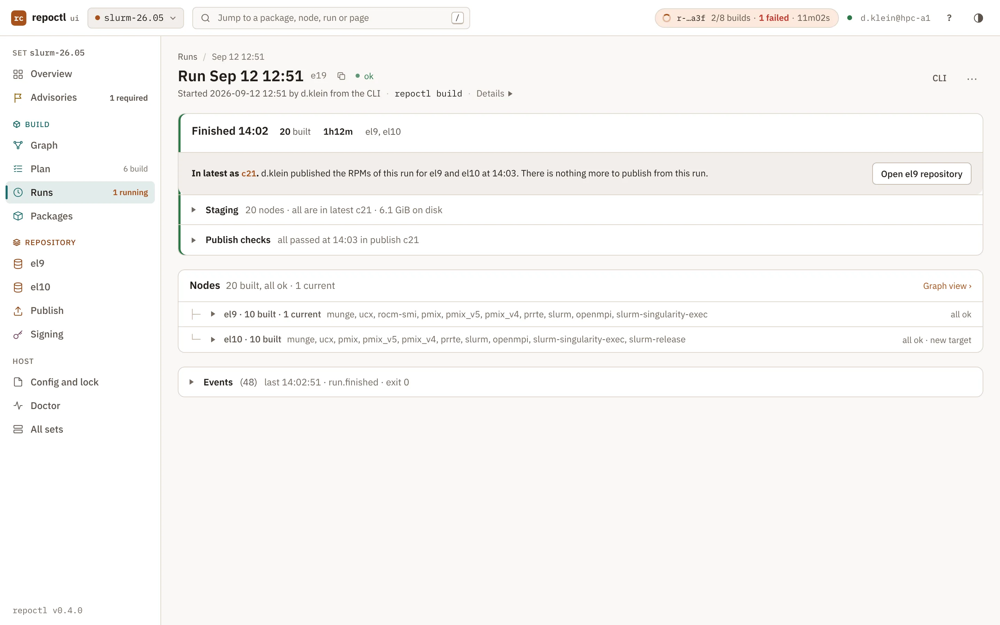
When a run ends, a summary card replaces the progress region; the tree stays below. The summary is one header line ("20 built · 1h12m · jobs 3 · el9, el10 · exit 0") and the call to action. The staging diff against latest and the publish checks are folds that open on a failure.
| Result | Exit | Summary card | Call to action |
|---|---|---|---|
| ok | 0 | Counts, staging diff; a published run says "in latest as c21". | Review publish › when a target is publishable (publish.html#takes), else the first failing check with its fix. |
| failed | 3 | Counts (a3f: 6 ok, 1 failed, 1 blocked, 13 current, 41m07s) and the failure cards. | Review el9 publish ›. In the story the first failing check is the lock ("repoctl.lock has changes that are not committed", with the commit command). |
| canceled | 130 | "Canceled by d.klein at HH:MM." Staging stays. | Build again |
| abandoned | – | "The process of this run ended without a result." Ok nodes stay staged. | Open log |
| publish ok | 0 | The eight steps, the snapshot, "served: behind". | none (Done) |
| publish failed | 13 | What is true now: nothing is tagged, or the snapshot is in the registry; latest is unchanged. | repoctl repo push p-… (Failed) |
The summary card shows only the first publish check that fails; the review shows all.
/s/<set>/runs/RUNrepoctl runs RUNrun:RUN swaps in the summary card; then the server closes the stream.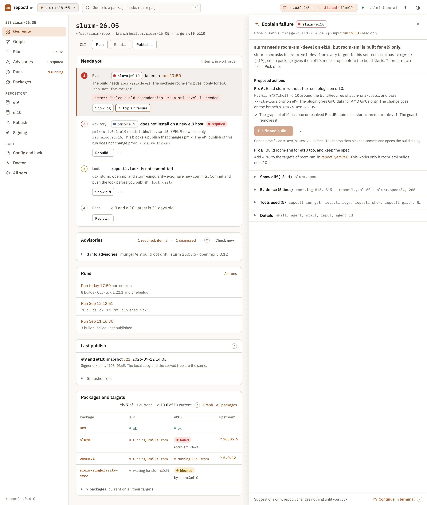
The agent panel shows the result of an agent button. Its behaviour (skills, tool lists, the agent command, the buttons, why there is no chat) is in agents.html#agent-panel.
%if 0%{?rhel} < 10). The proof line comes from repoctl_graph: "The graph of el10 has one unresolved BuildRequires for slurm: rocm-smi-devel. The guard removes it." Pin fix and build… is the filled primary. Copy diff and Open package are in ⋯.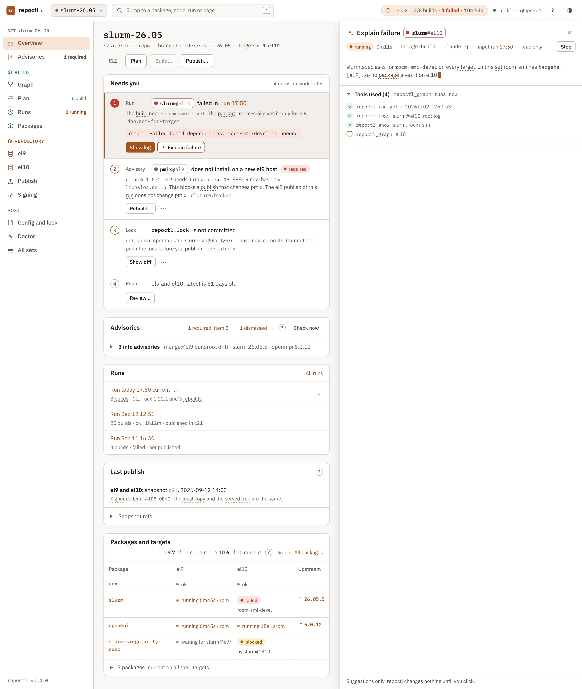
| State | Head | Body |
|---|---|---|
| running | "running", the time and Stop | Tools used is open. |
| done | "Done in 0m19s" and the muted line | Verdict, proposed actions, closed folds. |
| failed | "failed" and the cause, for example "failed · time limit 10m" | No verdict and no proposed actions. Details is open. |

No agent configured: agents.html#no-agent.
?agent=ID on any set page opens a stored result; start and stop routes: agents.html#agent-buttonsagent:ID (tool calls, text, final state)